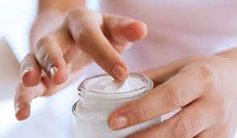

- Hydrater, hydrater, hydrater
Votre nouveau mot d’ordre : HY-DRA-TA-TION ! Peu importe votre type de peaux (grasse, sèche ou mixte), l’hydratation de votre peau est un « must do » pour avoir une belle peau. Si certaines peuvent hésiter à utiliser des corps gras comme une huile avant de se coucher,
il suffit de choisir une crème hydratante bio adaptée à votre peau. Contre toute attente, les peaux à tendance grasse ont aussi besoin d’hydratation,
il ne faut surtout pas zapper cette étape !

- Faire du gommage bio, votre nouveau meilleur ami
Le gommage est LE geste à adopter pour avoir une belle peau.
L’astuce derrière ce rituel à réaliser 1 à 2 fois par semaine : l’exfoliation des cellules mortes permet de faire respirer votre peau
Votre épiderme connaît une nouvelle dynamique. Votre teint est magnifié et gagne en éclat. Que ce soit pour votre corps ou votre visage,
gommage doit devenir un essentiel de votre routine beauté
page d'accueil
Votre nouveau mot d’ordre : HY-DRA-TA-TION ! Peu importe votre type de peaux (grasse, sèche ou mixte), l’hydratation de votre peau est un « must do » pour avoir une belle peau. Si certaines peuvent hésiter à utiliser des corps gras comme une huile avant de se coucher,
il suffit de choisir une crème hydratante bio adaptée à votre peau. Contre toute attente, les peaux à tendance grasse ont aussi besoin d’hydratation,
il ne faut surtout pas zapper cette étape !
Le gommage est LE geste à adopter pour avoir une belle peau.
L’astuce derrière ce rituel à réaliser 1 à 2 fois par semaine : l’exfoliation des cellules mortes permet de faire respirer votre peau
Votre épiderme connaît une nouvelle dynamique. Votre teint est magnifié et gagne en éclat. Que ce soit pour votre corps ou votre visage,
gommage doit devenir un essentiel de votre routine beauté